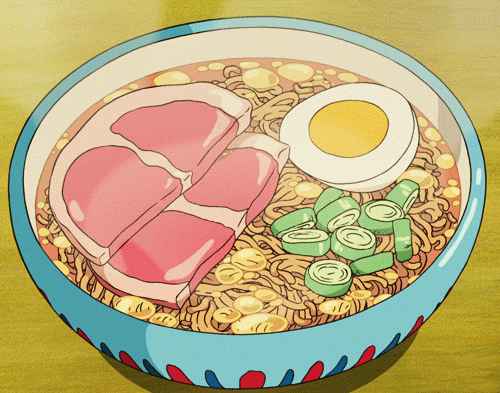

Ponyo is so excited to have her first bowl of ramen with ham!
It is very quick and simple to make with instant ramen and a few basic toppings.
2 x Japanese instant ramen packets
2 x slices of Canadian bacon or ham, cut in half down the middle
1 x soft or hard boiled egg, cut in half
1 x green onion, thinly chopped
Prepare the ramen according to the package instructions
Pour into a ramen bowl
Use the gif to help you layout the ham, egg, and green onions on top of the ramen.